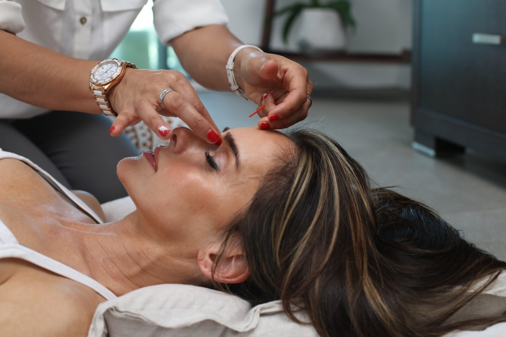

Visitors leave without enquiring
The homepage may look attractive, but it does not build enough confidence to push someone toward the next step.
Aesthetic Flow helps clinics, PMU artists, and cosmetic treatment brands look more credible online, improve enquiries, and create smoother booking journeys from the first click.
Clear consultation CTAs, premium treatment positioning, and stronger first impressions.
Make the next step obvious on every page.
Not generic web design. A more relevant sales journey for treatment-based businesses.
The right treatments, team, and brand are only part of the picture. If the website feels unclear, flat, or difficult to trust, more visitors leave before they enquire.
The homepage may look attractive, but it does not build enough confidence to push someone toward the next step.
Too much scrolling and too little guidance can make the enquiry journey feel passive instead of intentional.
If visitors cannot quickly understand what you offer and who it is for, they are less likely to stay engaged.
Your website should reinforce the standard of your treatments, not create hesitation or doubt.
Most visitors will browse on their phone first, so spacing, hierarchy, and CTAs need to feel effortless.
Trust, proof, treatment clarity, and booking prompts should work together instead of competing for attention.
Aesthetic Flow focuses on the pages and structures that help clinics look more established and convert more of the right visitors.

Full clinic websites designed around trust signals, treatment clarity, and consultation-focused journeys.
Explore service →Luxury artist sites for brows, lips, and permanent makeup brands that need stronger credibility online.
Explore service →
Premium structures for skincare clinics, facial treatments, and consultation-led service offers.
Explore service →
Focused campaign pages for one treatment, one audience, and one action you want visitors to take.
Explore service →Practical website audits that look at homepage messaging, trust, and the booking journey.
Explore service →
Improve page structure, CTA placement, mobile flow, and the overall path from interest to enquiry.
Talk about your site →A premium aesthetic is part of the job, but so is designing a website structure that supports trust, SEO foundations, and booking intent.
Built around how aesthetic patients browse, compare, and decide whether to enquire.
Every section should lead somewhere instead of acting like a brochure with no direction.
Spacing, hierarchy, and CTAs are designed for the reality of phone-first browsing.
Consultation, treatment, and trust pathways should feel obvious instead of hidden.
Clean headings, page intent, internal links, and service architecture that can scale.
Calm beige, espresso, and editorial styling that feels elevated without losing clarity.
These are placeholder direction cards for outreach, portfolio conversations, and showing how Aesthetic Flow approaches layout, hierarchy, and conversion.
A softer, luxury-led structure designed to build trust for brows, lips, and permanent makeup services.
A treatment-focused direction showing programmes, proof, and a smoother consultation journey.
A single-offer page direction for campaigns where the goal is faster, clearer treatment enquiries.

A treatment-led page with stronger proof, FAQ structure, and clearer prompts toward consultation.
We look at your current website, offer, audience, and where the booking journey is slowing down.
Page structure, SEO hierarchy, trust signals, and CTA flow are mapped around your services.
Your site is designed to feel premium, calm, modern, and aligned with the standard of your clinic.
Once ready, the site is prepared for launch with a cleaner path from first impression to enquiry.
I will review your homepage, booking flow, and trust signals, then show you practical changes that could help more visitors enquire.
Aesthetic Flow is positioned specifically for aesthetic clinics, PMU artists, skin clinics, and treatment-led beauty businesses because the patient journey is different from generic service brands.
Yes. Website reviews are designed for clinics that already have a site but suspect it is not doing enough to build trust or generate enquiries.
Yes. Landing pages can be structured around one treatment, one campaign, or one service category to keep the conversion path focused.
Yes. Some clinics need a full rebuild, while others benefit more from clearer service architecture, CTA fixes, or stronger treatment pages.
Yes. Mobile-first layout, spacing, and CTA visibility are a core part of the way Aesthetic Flow approaches page design.
Yes. Booking links, consultation requests, WhatsApp prompts, and softer lead-generation steps can all be included in the page flow.
Yes. Page hierarchy, heading structure, service intent, and internal linking can all be planned to support stronger SEO foundations.
Aesthetic Flow is built to help clinics look more credible online, guide visitors more clearly, and create a stronger enquiry journey from the first click.